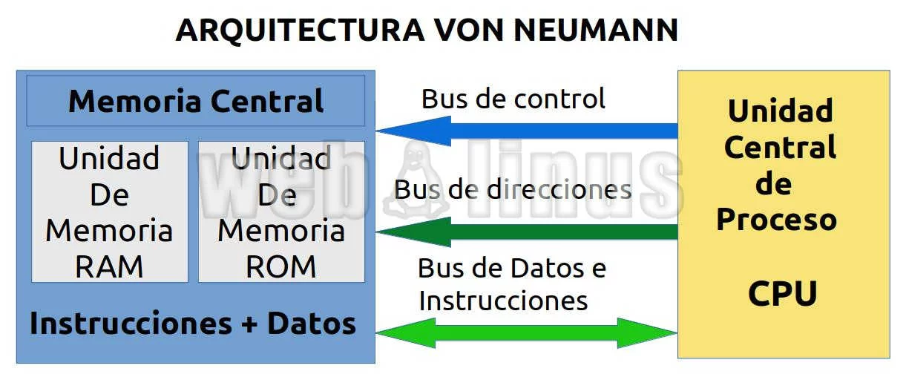

Hazme click para comenzar :)
La historia de la arquitectura de computadoras comienza en la década de 1930, cuando el matemático británico Alan Turing propuso la idea de una "máquina universal" capaz de realizar cualquier cálculo matemático.
Durante la Segunda Guerra Mundial, Turing y otros científicos trabajaron en la construcción de una máquina de este tipo para decodificar mensajes secretos alemanes.
 Alan turing
Alan turing
En 1945, el científico estadounidense John von Neumann propuso una arquitectura de computadora que se convertiría en el modelo para la mayoría de las computadoras modernas. En la arquitectura de von Neumann, los programas y los datos se almacenan juntos en la memoria principal, lo que permite que la CPU acceda a ellos de manera rápida y eficiente.

En la década de 1950, las computadoras eran grandes, costosas y utilizadas principalmente por el gobierno y grandes corporaciones. Sin embargo, a medida que la tecnología mejoró, las computadoras se volvieron más pequeñas, más baratas y más accesibles para el público en general.
En la década de 1970, la introducción de los microprocesadores permitió la creación de computadoras personales, lo que llevó a una explosión en la demanda de computadoras y el crecimiento de la industria de la tecnología de la información.
En la década de 1980, el desarrollo de las redes de computadoras permitió que las computadoras se conectaran entre sí, lo que llevó al surgimiento de Internet y la creación de la World Wide Web en la década de 1990.
Desde entonces, la arquitectura de computadoras ha evolucionado para adaptarse a las necesidades cambiantes de la sociedad. Los avances en la tecnología de la información han llevado a la creación de dispositivos móviles, la computación en la nube y la inteligencia artificial, y se espera que la arquitectura de computadoras continúe evolucionando a medida que la tecnología avanza.
Not being developed yet
Not being developed yet
- Practica 1
- Practica 2
- Practica 3
- Gamas de equipo de computo
- Cotizacion de equipos